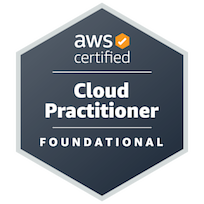

Web Developer
Making (my) life easier, one code at a time.
About
I am currently taking my Bachelor's Degree of Computer Science at the prestigious University of the Philippines, and recieved my High School diploma at the Philippines Science High School SOCCSKSARGEN Region Campus. I am a life-long learner and I like staying up-to-date with industry standard technology. I dive myself into the world of Computer Science, making side projects to learn more about the technology I use. I aspire to be a Full Stack/DevSecOps Engineer, and I am willing to learn new technology outside of the standard taught at the academe.
Skills


Education and Certifications
Philippine Science Highschool SRC
High School Diploma
2017-2023

University of the Philippines Mindanao
Bachelor's Degree of Computer Science
2023-Present
Amazon Web Services
Certified Cloud Practitioner
2026-2029

Projects
ONLINE COVID-19 CONTACT TRACING SYSTEM (CCTS) WITH FACIAL RECOGNITION HTML, CSS, JS, JQuery, AJAX, PHP, MySQL
Senior High School Research Paper. Sole Developer
UNIVERSITY BUY-AND-SELL PLATFORM IMPLEMENTED WITH AN SQL DATABASE HTML, BootstrapCSS, JQuery, AJAX, PHP, MySQL
University Course Requirement. Sole Developer
SPARCS TECH-TIX EVENT TICKETING PLATFORM Serverless Framework, AWS Lambda, Python, FastAPI, Vite, React, Typescript, Shadcn/ui
University organization (SPARCS) project for online event ticketing. Minor Backend Role dealing with Code Modifications and Standardization:
Implemented the Single Responsibility Principle (SRP). Extracted and refactored functionality across the codebase, ensuring each function had a single purpose and preventing future technical debt.
Overhauled and standardized docstrings for every function, promoting clarity, consistency, and ease of onboarding for new contributors
COLLEGE ROOM MANAGEMENT SYSTEM Next.js, React, TailwindCSS, Typescript, Radix, Shadcn/ui, Momento, VTest, React Testing Library, Playwright, Zod, Sentry, Storybook, Supabase, AWS Amplify, AWS S3, ESLint, Prettier, Github Actions, Posthog
University Course Requirement. Aims to streamline and to digitalize the process of reserving rooms for class or events at the College of Science and Mathematics in the University of the Philippines Mindanao Campus. Full Stack Developer:
Tackled core authentication, middleware, and session management challenges to deliver a secure and seamless user experience.
Spearheaded frontend development—resolving layout breakpoints, centralizing component folders, and unifying route-based CSS to enhance consistency across the platform.
Streamlined environment variable handling and validation (.env), and introduced a CI/CD Pipeline to enforce code consistency with ESLint and Prettier—significantly reducing development friction.
Spearheaded the development of robust, scalable backend APIs that underpin multiple pages, ensuring rapid data delivery and seamless integration with front-end systems.
Orchestrated most of the configuration of Supabase, creating a robust, real-time backend that efficiently supports a dynamic web environment


CAFEPOS: Point-of-Sale System for Pres Kopee Next.js, React, TailwindCSS, Typescript, Shadcn/ui, Supabase, ESLint, Prettier, Github Actions, Vercel
University Requirement. A robust and versatile Point-of-Sale system designed for Pres Kopee, a local coffee shop. Full Stack Developer:
Implemented and presented a comprehensive Point-of-Sale system, integrating real-time inventory management, sales tracking, and user-friendly interfaces to enhance operational efficiency.
Guided and mentored team members in best practices for frontend and backend development, ensuring code quality and maintainability.
Optimized caching, database queries and API endpoints resulting in an improvement in overall system performance.
Implemented fall-back measures and error handling to ensure system reliability as well as protection against potential user errors.
Adjusted and optimized the user interface for mobile responsiveness, ensuring a seamless experience across devices.


SHOPUP: UNIVERSITY CAMPUS MARKETPLACE APP Next.js, React, TailwindCSS, Typescript, Shadcn/ui, Zod, Supabase, ESLint, Prettier, Github Actions, Vercel, Cloudinary
University Requirement. Upgraded version of University Buy-and-Sell Platform. Sole Developer:
Implemented a comprehensive marketplace platform, integrating real-time product listings, user authentication, and a real-time chat system to facilitate seamless transactions between buyers and sellers as well as real-time notifications.
Developed a robust backend architecture using Supabase, ensuring data integrity, security, and efficient handling of user-generated content.
Optimized the frontend for performance and responsiveness, resulting in a seamless user experience across devices.


CHIPS N' TIPS: PERSONAL FINANCE TRACKER Next.js, React, TailwindCSS, Typescript, Shadcn/ui, Zod, Supabase, ESLint, Prettier, Vercel, IndexedDB
Side project. A personal finance tracker that helps users manage their expenses and savings. Full Stack Developer:
Created a full-stack personal finance tracker for users to manage their expenses and savings.
Features a calendar system in which users can input important payment dates, as well as detailed analytics and charts to help users visualize their spending habits.
Used Supabase only for data backup, while IndexedDB is used as the primary database for an offline-first approach, allowing users to access and use the app anywhere.
Implemented PWA features, allowing users to install the app on their mobile devices and use it offline, enhancing accessibility and convenience.
Included customizeable categories, allowing users to tailor the app to their specific financial tracking needs and preferences.


GILBRAD.GITHUB.IO Native JavaScript, HTML, CSS
A personal portfolio website. Sole Developer:
Created a personal portfolio website to showcase my skills, projects, and experience in web development.
Implemented a responsive design, ensuring a user-friendly experience across devices.
Created intro animations and interactive elements to provide a modern look and feel.
Deployed the website using Github Pages.


Experience
Software Engineer - Hibi June 2025 - Present
- Implemented end-to-end authentication using Amazon Cognito with Google OAuth 2.0, JWT validation, and secure token handling across frontend and backend.
- Designed and built RESTful Lambda handlers in Go following hexagonal (clean) architecture, separating domain logic from adapters for repositories, handlers, and external providers.
- Contributed to the serverless infrastructure using AWS CDK (TypeScript), including API Gateway routes, DynamoDB tables, and IAM policies scoped to least-privilege access.
- Collaborated on frontend-backend integration for a Next.js PWA, ensuring seamless auth flows and API consumption with proper error handling and type-safe contracts.
Software Developer Intern - Itemhound Corporation June 2026 - Present
TBA